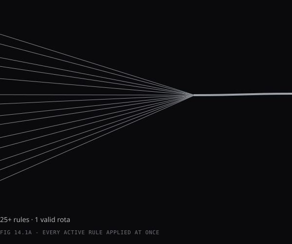
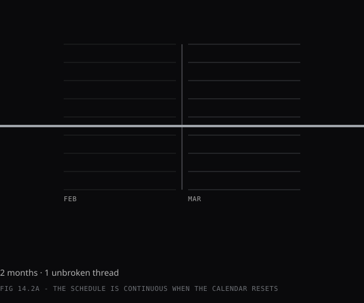
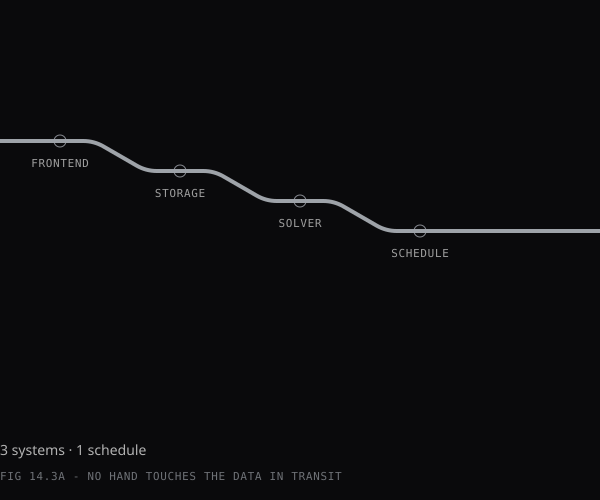
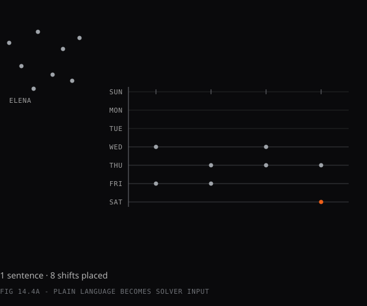
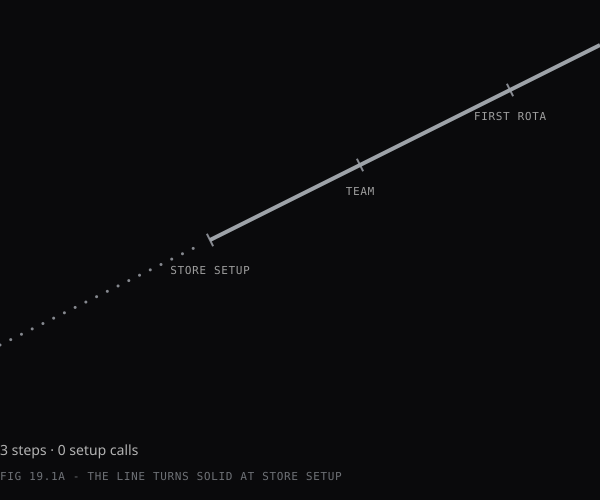
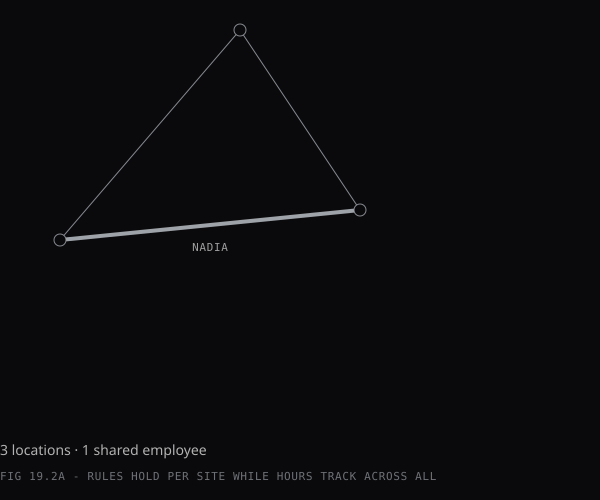
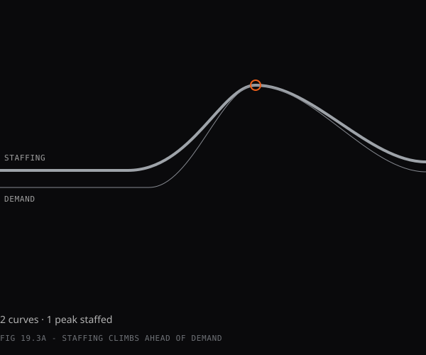

AI-powered setup
5 min → configured
store built through conversation, guided by AI
Accord · designer handoff
Each section below quotes its layout directive from the landing spec verbatim, then runs the existing diagram files inside that behaviour — sticky scroll-swapping panels, auto-tabs, phone scroll-reveals, a pinned stats bar — labelled with the real copy-deck text. Judge the mechanics, not the styling.
Spec quotes mentioning “teal” are historical — the orange token set overrides spec colour mentions.
SPEC DIRECTIVE: [SCROLL] Stats bar pins on scroll, numbers count up on entry. Quote slides in below. Headline “One generation replaces the monthly spreadsheet.” appears as the final frame of the hero scrub sequence above, not in this section.
WHAT ACCORD DOES
Accord is an AI-powered scheduling engine that builds validated monthly rotas from team requests and business rules.
AI-powered setup
5 min → configured
store built through conversation, guided by AI

Cross-month intelligence
0 blind spots
monthly scheduling for a 5-person team

Single-equation solving
25+ rules
1 pass — all constraints solved together, as one equation
It reads holidays, shift restrictions, part-timer caps, coverage minimums, and carryover from last month, then processes them as a single equation. The output is a full 30-day rota, checked against 25+ rules, ready to review and publish. The manager's input is the team's requests. The output is a schedule that holds all week.
“I stopped rebuilding the rota from scratch every month. Now I just review what comes back and publish it.”— Anna Kaus, Deputy Manager, Thread & Grain
SPEC DIRECTIVE: [LAYOUT] Sticky switch: “FOR MANAGERS” | “FOR THE TEAM” toggles content within each outcome block. Each outcome block: Anchor title → Headline → Subheadline → Table (“What changes” | “Why it matters”). Some outcomes show both tabs. Some show only one. The outcome determines the audience. All copy in second person (“you” / “your”). Left side: sticky conceptual diagram panel (editorial style, same visual language as Section 2 diagrams). Updates per outcome on scroll.
WHAT YOU GAIN
Fewer corrections. Fewer disputes. Hours returned to the business.


D4 · TIME RECLAIMED
TIME RECLAIMED
The rota is ready before the working week starts.
For managers
| What changes | Why it matters |
|---|---|
| Monthly scheduling reduced to one generation | Your Sunday evenings back. Monday starts on the shop floor, not the spreadsheet. |
| Rota complete and validated before Monday morning | You walk in with the schedule done. No carry-over admin. |
| 24-48 hours per year reclaimed from unpaid admin work | That time goes back to managing the team, not managing cells. |
For the team
| What changes | Why it matters |
|---|---|
| Rota arrives days earlier each month | You lock in plans sooner. No waiting until Sunday night for Monday's shifts. |
| Fewer last-minute changes after publication | Shift swaps drop because the schedule is set earlier and set correctly. |
| Publication happens on a consistent rhythm | You stop asking "is the rota done yet?" It arrives the same time each month. |
CONFLICT-FREE PUBLISHING
Publish once. Trust it all week.
For managers
| What changes | Why it matters |
|---|---|
| 40+ rule-request collisions resolved at generation | You publish with confidence. No Thursday surprises. |
| Root cause of every collision visible | You see exactly which rule clashed and the smallest adjustment to fix it. |
| Coverage gaps surfaced during generation | Shortfalls fixed in the grid, before anyone starts the week short-staffed. |
For the team
| What changes | Why it matters |
|---|---|
| Published rota stays stable from day one | No "can you come in, we're short" calls. The schedule holds. |
| Submitted requests appear in the published schedule | What you asked for is what you see. Trust in the process. |
| Mid-week corrections drop to near zero | Fewer swaps, fewer surprises. Your plans hold. |
AUTOMATIC REBALANCING
Book a holiday. Targets adjust. No spreadsheet rework.
For managers
| What changes | Why it matters |
|---|---|
| Holiday bookings reduce weekly targets automatically | Workload rebalances on its own. No spreadsheet adjustment after every booking. |
| Blocking rule named when a preference can't be honoured | You explain the reason, not the mystery. Conversations are faster. |
| Coverage redistribution happens at generation | No "can someone cover Wednesday?" messages. The engine handles redistribution. |
For the team
| What changes | Why it matters |
|---|---|
| Different request types produce different schedule effects | You understand exactly how each request shapes your week. |
| Deferred preferences come with a specific reason | You see the rule, not a blank space where your request was. |
| Published rota reflects submitted preferences | Your day off stays. Your shift preference lands where coverage allows. The schedule feels like yours. |
CONTRACT ACCURACY
The gap between contracted hours and scheduled shifts drops to zero.
For managers
| What changes | Why it matters |
|---|---|
| Payroll matches the published rota exactly | No end-of-month corrections. No disputes over shift counts. |
| Weekly shift distribution adapts within the monthly cap | Flexibility where you need it. The monthly total stays locked. |
| Arithmetic removed from the scheduling process | No calculator. No "did I count right?" The engine handles the maths. |
For the team
| What changes | Why it matters |
|---|---|
| Contracted hours respected to the shift | No extra shifts land on your rota by mistake. Your schedule matches your contract. |
| Shift count visible and verifiable at any time | You can check the count against your contract. No month-end surprises. |
| Over-scheduling caught at generation | The system gets it right from the start. No chasing corrections. |
FIRST-PUBLISH RELIABILITY
The schedule you publish on Monday still holds on Friday.
For managers
| What changes | Why it matters |
|---|---|
| Every active rule checked before publication | Mid-week re-rotas and emergency corrections disappear. |
| Rule-vs-rule conflicts caught in one pass | You trust the rota because nothing slipped through. |
| Coverage confirmed at generation | No post-publish "can someone cover Thursday?" messages. |
For the team
| What changes | Why it matters |
|---|---|
| Published schedule matches what you requested | "I thought I had the day off" conversations stop. |
| Rota holds from day one to day thirty | You plan around the schedule and the plans stick. Fewer last-minute swaps. |
| Published rota respects your submissions | You see your requests in the grid. The schedule is yours. |
SPEC DIRECTIVE: [LAYOUT] Sticky switch: “FOR MANAGERS” | “FOR THE TEAM” — same switch pattern as Outcomes.
SETUP TO SCHEDULE
SETUP · 5 MINUTES
Answer 5-7 questions in an AI chat. The system builds a scheduling profile from the conversation.
What's captured
TEAM · 2 MINUTES PER PERSON
Describe each employee in a conversation. The system captures their profile and feeds it into the constraint model.
What's captured
GENERATE
Press generate. Accord processes all team requests and business rules as one equation. A full 30-day schedule comes back, validated against all active constraints.
What happens next
REQUESTS · 2 MINUTES
Each request type carries a defined weight in the scheduling equation. Three types:
ALWAYS AVAILABLE
Once approved, the rota is visible in the app. Full month of shifts, colour-coded by type (Early, Mid, Late, Off). Accessible from any device.
What you see
"I used to keep a photo of the rota on my phone. Now I just open the app and it's already there, colour-coded and up to date." — Marcus Chen, Retail Associate, Wren & Co Interiors
SPEC DIRECTIVE: [LAYOUT] Split view. Left: sticky diagram panel showing actual UI states and controls, updates per feature on scroll. Right: feature cards. Feature name tabs start pinned to bottom of viewport, migrate to top as user scrolls through each feature's content.
THE RULES BEHIND THE ROTA
The constraints that turn a request pile into a valid schedule.
D12 · COVERAGE MINIMUMS
COVERAGE
Define how many staff are needed per shift type. The engine treats this as a hard constraint and confirms coverage before the rota generates.
What it does
"We had a Tuesday where nobody was on Lates. Just... nobody. Found out at 4pm. That doesn't happen anymore." — Daniel Osei, Store Manager, Beechwood & Hale
CONTRACTS
Move shifts between weeks when coverage demands it. The monthly total stays locked to the contract.
What it does
"Nadia does three shifts a week but some weeks we need four. I used to just... give her four and hope payroll didn't notice. Now it balances itself." — James Whitfield, Deputy Manager, Wren & Co Interiors
CONTINUITY
Last month's final shifts feed into this month's first assignments. The engine reads the previous published rota and counts forward.
What it does
"The carryover across months was the thing that got me. I had no idea James was working six days straight because the spreadsheet only shows one month at a time." — Sophie Andersen, Store Manager, Beechwood & Hale
LIMITS
Set the maximum number of working days in a row. Default: 5. Tracked continuously as a hard constraint.
What it does
"James came in looking knackered one Monday and I checked. Six days in a row, spanning two months. I hadn't even seen it." — Lisa Nguyen, Store Manager, Wren & Co Interiors
RESTRICTIONS
Assign shift-type restrictions per person. Hard constraints, respected on every generation.
What it does
"Elena's restrictions are complicated. Lates only, no Sundays, no Mon-Tue. I used to forget at least one of those every month." — Anna Kaus, Deputy Manager, Thread & Grain
COVERAGE
Designate days that need a manager on-shift. Overlapping manager requests trigger a specific conflict alert.
What it does
"Me and Sophie both booked the same Tuesday off once. Nobody noticed until the morning team turned up and there was no manager. Never again." — Rachel Torres, Store Manager, Wren & Co Interiors
VALIDATION
Test whether the current configuration is solvable before the engine runs. Conflicts named and fixes suggested.
What it does
"It told me the schedule was impossible before it even tried. Three people off on the same day with a two-person minimum. Obvious in hindsight, invisible in the spreadsheet." — Sophie Andersen, Store Manager, Beechwood & Hale
OUTPUT
Review the generated rota in an editable grid. Adjust any shift. Export when ready.
What it does
"I like that I can still change things. It gives me the schedule but I'm the one who says 'yes, publish it.' That matters." — Anna Kaus, Deputy Manager, Thread & Grain
SPEC DIRECTIVE: [LAYOUT] Mobile app mockup (phone frame) centred or left-aligned. Scroll-triggered reveals: as the user scrolls, the mockup screen changes and each feature appears with icon + label + description on the opposite side.
YOUR SCHEDULE, ANYWHERE
Check shifts on the bus. Submit requests from the sofa.
M1 · BIOMETRIC LOGIN
ICON: FINGERPRINT
Biometric or PIN authentication. Open the app, see your schedule. No re-entering credentials every session.
ICON: CALENDAR PIN
Holiday, day off, or shift preference. Tap the day, choose the type, confirm. The request is logged with its mathematical weight and ready for the next generation.
ICON: MONTH GRID
Colour-coded shifts for the entire month. Open the app and the schedule is already there: which days you work, which shift type, which days are off.
ICON: CHECKMARK
Every request shows its status the moment the rota generates. Honoured requests are confirmed. Deferred requests show the specific rule that blocked them.
ICON: BELL
Push notification when the schedule is approved and published. No "is the rota done yet?" messages.
ICON: SLIDERS
Set recurring blocked days, update your availability, and choose notification preferences. Changes feed into the next generation automatically.
ICON: CLIPBOARD
See who's on each shift today, which slots are filled, and whether coverage is met. A five-second check from the phone.
NO LAYOUT DIRECTIVE IN SPEC — the layout below is INFERRED, not specified.
THE ARCHITECTURE
The solver behind the schedule.
CP-SAT treats the entire schedule as a single equation.

The previous month's published rota is read before every generation.

Next.js frontend. NocoDB on Railway for storage. Python solver as a Vercel serverless function.

Store setup and team onboarding run through conversational AI.

SPEC DIRECTIVE: [LAYOUT] Auto-tabs. Each tab has a label + short expandable description that auto-expands and collapses on a timer. Each tab includes a conceptual diagram (same editorial style as Sections 2 and 6). Below tabs: email capture field with CTA.
ROADMAP
On the roadmap.
Full self-serve access. Configure the store, add the team, and generate schedules without a setup call. The same AI-guided process, available on demand.

Shared staff pools across stores. One employee works two locations, coverage rules apply per site, and total hours track across all of them.

Coverage that responds to demand. Historical patterns and seasonal peaks shape staffing levels before anyone submits a request.

Get updates when new features ship.
DEMO STUB — non-functional, per spec: “Inline email capture below tabs. Minimal: one field, one button.”